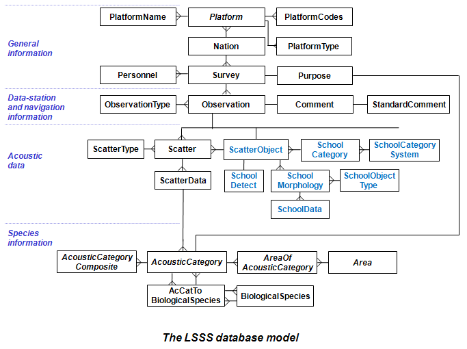

The database contains the results of the scrutinizing of the acoustic data and some information needed during the scrutinizing process. The communication with the relational database is done through Hibernate and JDBC. Several database engines may be used, including:
The figure below shows how the database tables relate to each other. Some tables keep general information about the data, i.e. name and code of nations, observing platforms and surveys. Some tables keep information about the observations itself, i.e. about the data-stations and its belonging navigation data and comments. Some tables keep the data from the data-stations, e.g. the acoustic data. Some tables keep the information about the biological species and acoustic categories.

The database tables in alphabetic order are as follows (tables in red are implemented, but not fully used):
The size of the fields of each table is given as short, int, long, char or float. The sizes of each of these fields are as follows:
short: 2 byte (int 2) int: 4 byte (int 4) long: 4 byte (int 4) char: 1 byte (int 1) float: 4 byte (float 4) double: 8 byte (float 8)
The fields Date and Time (ObservationDate, StartDate, ObservationTime, StartTime, ...)